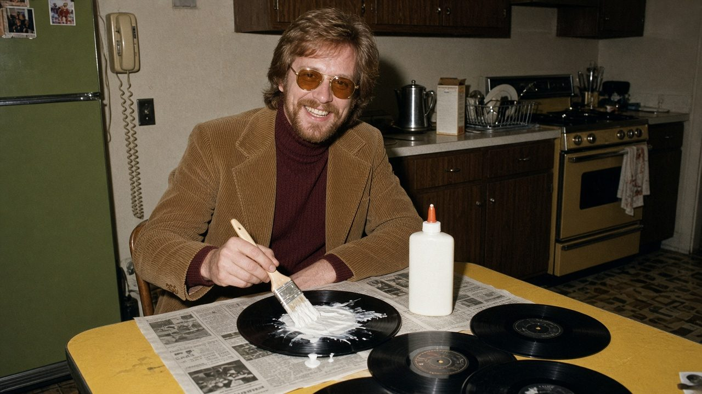
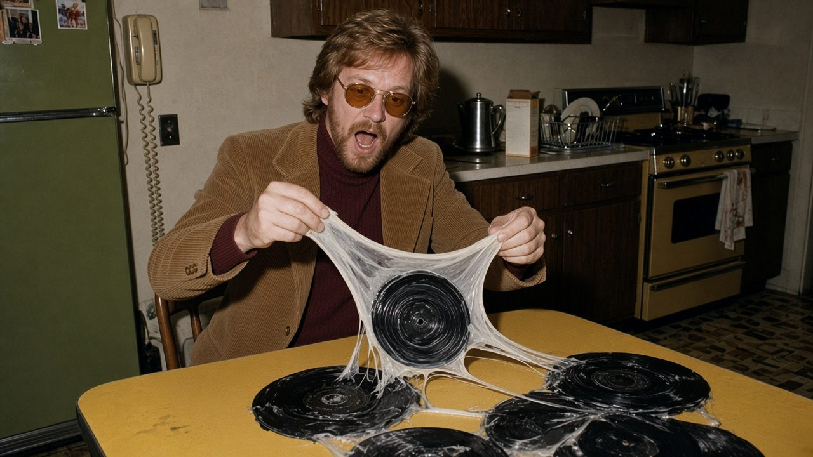
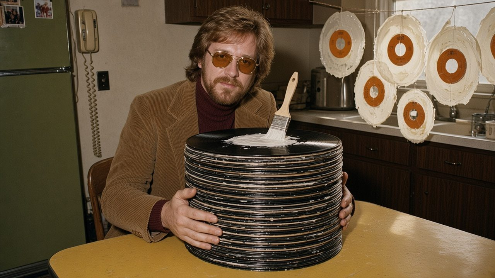

Vinyl desk · The interview ·
“I Just Wanted Them Clean”
Dwayne Pettibone of Lower Fudgeley, Ohio, heard you can lift the dust off a record with a thin coat of wood glue. He did not hear the word “thin”.

We met Dwayne in his kitchen, which still smells of carpentry. He offered coffee, then remembered the mugs were glued to the shelf.
Dwayne, what happened?
I cleaned my records. All 412 of them. Now I own one record. It weighs ninety pounds.
Where did you hear about the wood glue trick?
A guy at the hardware store said “a thin layer, let it dry, peel it off.” I heard “layer”, “dry” and “peel”. I’m a busy man.
How thick did you go?
About as thick as a pancake. A good pancake. I switched to a paint roller for the double albums.

And you let it dry?
For about four minutes. Then I stacked them so they’d dry faster. Together. As a team.
Which glue did you use?
The yellow one. The bottle says “Exterior. Waterproof. Permanent.” I figured my records deserved the best.
“The turntable is now also part of the collection.”
Can you still play anything?
The top one. The needle goes in. It doesn’t come out. The turntable is now part of the collection.
What about the labels?
They came off in one piece, like a little see-through ghost of the record. I hung them in the kitchen window. My wife says it’s the only thing in this house that still spins.
Advertisement · fake

So what now?
I’m buying it all back. Last week I bought my own copy of Frampton Comes Alive! from Vern, at three times what I paid. He says it’s “collectable now.” He pointed at me.
Do the shops know what happened?
When I walk in, they ring a special bell. Vern’s put my picture up behind the till. It says “Our Best Customer”. Underneath somebody wrote “twice”.
Any advice for our readers?
Support your local record shop. I’m paying for their new roof. Mom, if you’re reading this: the cat is fine. He’s just a bit shinier now.
Fine print: Dwayne Pettibone is invented. A thin layer of wood glue can lift dust from a record; a thick one cannot be recommended. The cat is, we are told, only a bit shinier.
← Back to the lobby